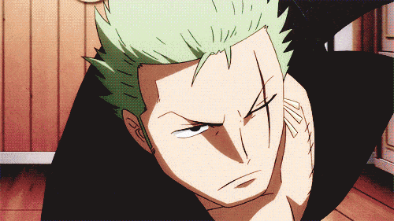
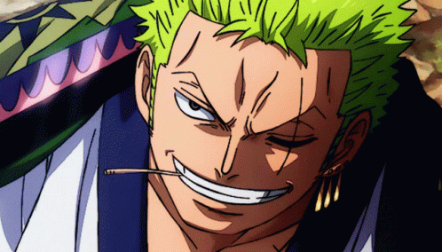
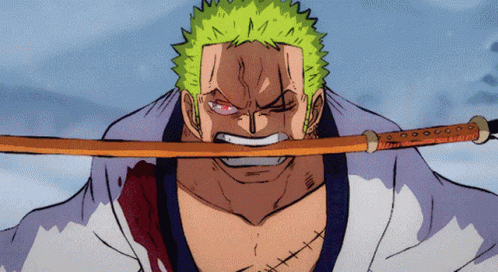
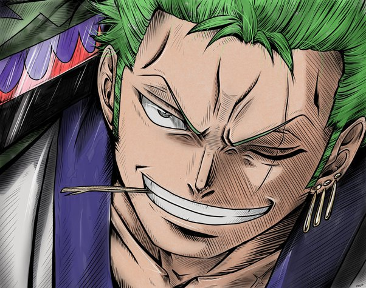
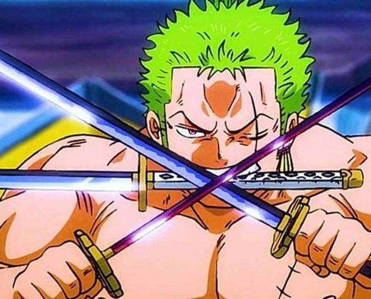

Zoro, Sanji and Luffy Fighting Ex-Marine Admiral Z.

Zoro Meets Luffy in Wano.

Zoro first testing the power of sword of Enma.

The fight between the two greatest swordsman and two of the strongest pirate vice-captain.

Roronoa Zoro
Born in the East Blue, Zoro is the son of Tera and Roronoa Arashi, the grandson of Shimotsuki Furiko and Roronoa Pinzoro, and the grandnephew of Shimotsuki Ushimaru, making him a matrilineal descendant of both the Shimotsuki Family of Wano Country and the legendary samurai,Shimotsuki Ryuma.As a master of Three Sword Style, a swordsmanship style which he created during his childhood training in Shimotsuki Village,
